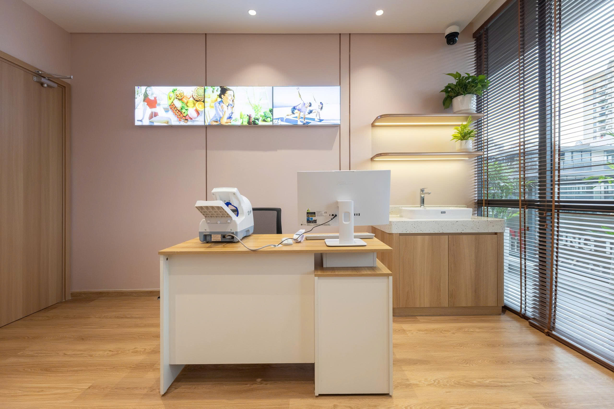
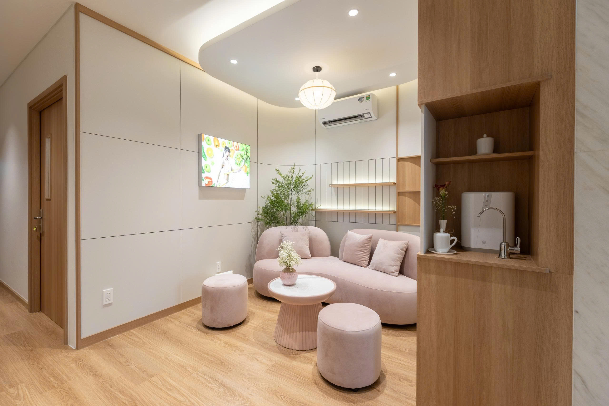
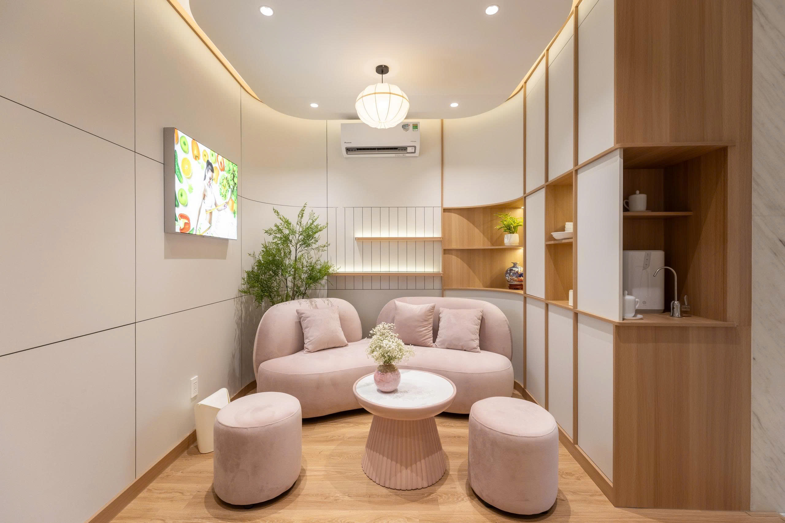
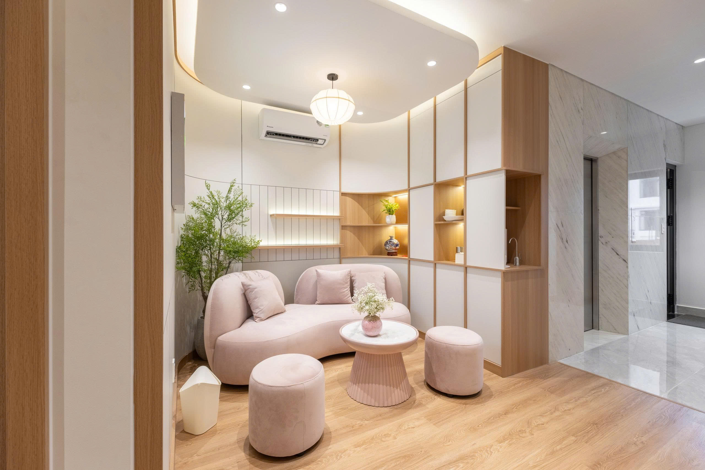
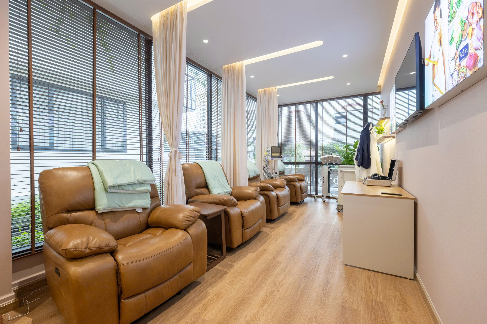

Khoa Nội Tổng hợp tại Takashij Clinic là điểm chạm đầu tiên trong việc phát hiện và điều trị toàn diện các bệnh lý nội khoa mạn tính. Đội ngũ chuyên gia xây dựng phác đồ điều trị tận gốc kết hợp y học lối sống để duy trì sức khỏe bền vững.
Sau tuổi 40, mạch máu bắt đầu lão hóa, dễ hình thành mảng xơ vữa gây tắc nghẽn, tăng nguy cơ nhồi máu cơ tim và đột quỵ. Các triệu chứng như chóng mặt, đau ngực, tê yếu tay chân thường bị bỏ qua cho đến khi bệnh tiến triển nặng. Gói khám giúp phát hiện sớm rối loạn huyết áp, mỡ máu, lưu thông tuần hoàn để chủ động phòng ngừa biến cố nguy hiểm.
Tiểu đường là bệnh lý chuyển hóa âm thầm, tiến triển trong nhiều năm mà ít triệu chứng rõ ràng. Khi không kiểm soát tốt, bệnh có thể gây tổn thương tim, thận, mắt và thần kinh. Gói tầm soát giúp xác định sớm tiền tiểu đường và mức độ ảnh hưởng của insulin, từ đó can thiệp kịp thời bằng chế độ ăn uống và vận động hợp lý.
Rối loạn chuyển hóa bao gồm tăng mỡ máu, tăng acid uric, gan nhiễm mỡ hay gout – những vấn đề phổ biến ở tuổi trung niên. Khi kéo dài, chúng làm tăng gánh nặng lên gan, tim, thận và khớp, gây mệt mỏi, đau nhức hoặc biến chứng tim mạch. Gói tầm soát giúp đánh giá toàn diện các chỉ số sinh hóa và thiết lập phác đồ điều chỉnh phù hợp cho từng người.
Gan là cơ quan lọc độc và chuyển hóa quan trọng, nhưng dễ bị tổn thương bởi rượu bia, thuốc, hoặc chế độ ăn nhiều dầu mỡ. Bệnh gan thường diễn tiến âm thầm, chỉ phát hiện khi đã chuyển sang giai đoạn xơ gan hoặc ung thư gan. Gói khám giúp đánh giá men gan, chức năng gan, phát hiện sớm các tổn thương để bảo vệ và phục hồi sức khỏe gan.
Tuyến giáp điều hòa năng lượng và chuyển hóa cơ thể, nhưng có thể xuất hiện nhân hoặc khối u theo thời gian. Dù đa phần là lành tính, một số trường hợp có nguy cơ tiến triển ác tính nếu không phát hiện sớm. Gói tầm soát giúp kiểm tra toàn diện tuyến giáp & siêu âm phát hiện bất thường, từ đó điều trị kịp thời và hiệu quả.
Cơ thể sau tuổi 45 dễ phát sinh nhiều bệnh lý mạn tính như cao huyết áp, rối loạn mỡ máu, gan thận yếu hoặc suy giảm miễn dịch. Việc khám định kỳ giúp theo dõi các chỉ số cơ bản, phát hiện sớm rối loạn tiềm ẩn trước khi chuyển nặng. Đây là gói khám nền tảng giúp duy trì sức khỏe ổn định và phòng ngừa bệnh tật lâu dài.

Chuyên viên trao đổi để nắm rõ tình trạng sức khỏe và mong muốn của khách hàng.

Chọn bác sĩ và chuyên khoa phù hợp nhất cho từng vấn đề sức khỏe.

Thực hiện xét nghiệm, siêu âm, X-quang bằng thiết bị chuẩn quốc tế.

Bác sĩ đánh giá toàn diện, phát hiện sớm các nguy cơ tiềm ẩn.

Đưa ra giải pháp hiệu quả, kết hợp y học hiện đại và các liệu pháp y học tái tạo.

Định kỳ kiểm tra, điều chỉnh phác đồ giúp duy trì sức khỏe bền vững.

“Cô bị viêm khớp nên trước đây đi lại khá khó khăn, thường xuyên đau nhức. Từ khi được chăm sóc sức khỏe tại Viện Nghiên Cứu Sức Khỏe - TAKASHIJ CLINIC, cô thấy đi lại dễ dàng hơn và những cơn đau cũng giảm bớt. Cô thật sự rất biết ơn các bác sĩ.”

“Mọi người ai cũng khen cô dạo này trông trẻ và khỏe ra. Chứ trước đây cô hay bị ốm vặt, nhiều lúc còn phải truyền nước nữa. Từ khi được chăm sóc sức khỏe tại Takashij Clinic, cô cảm thấy yên tâm và rất hài lòng. Cảm ơn các bác sĩ!”

“Cô rất ngại đi viện. Mà đến Takashij Clinic, thì cảm giác như đang đi nghỉ dưỡng vậy, vừa thư thái vừa thoải mái. Sau một thời gian chăm sóc sức khỏe tại đây, cô thấy sức khỏe được cải thiện lắm. Cô rất mong mọi người cũng có dịp trải nghiệm dịch vụ này.”
Hãy để Takashij Clinic chăm sóc sức khỏe của bạn.
Để lại thông tin chi tiết dưới đây.